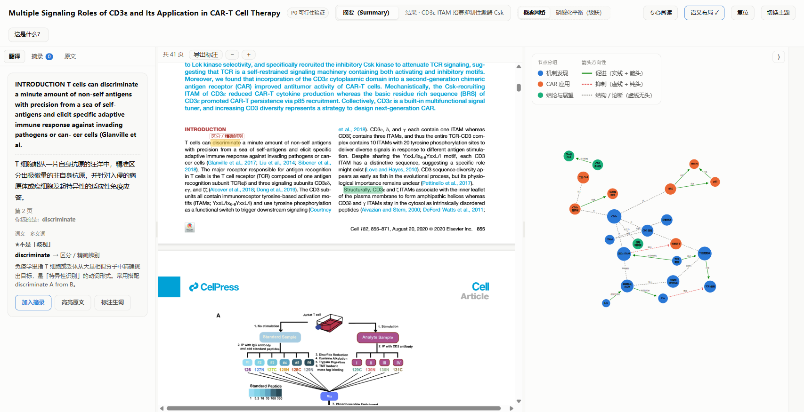
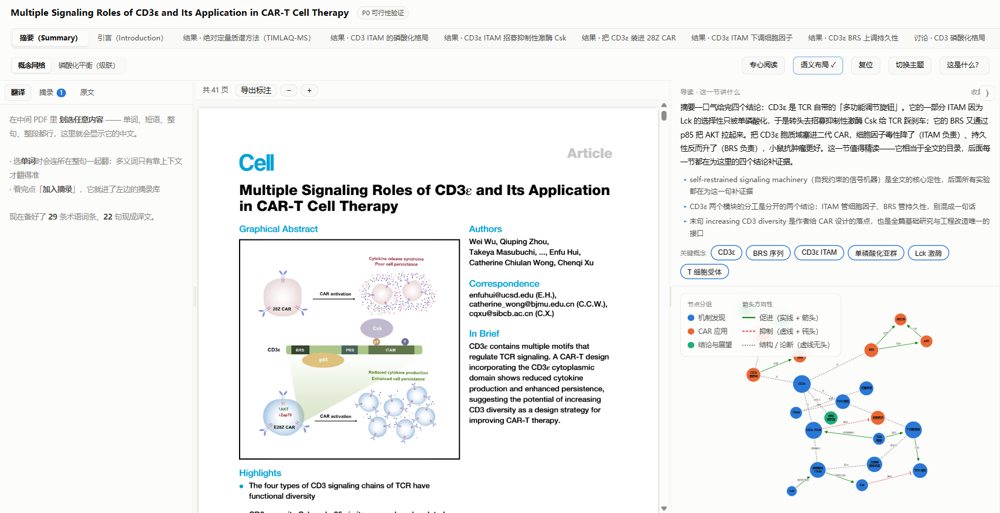
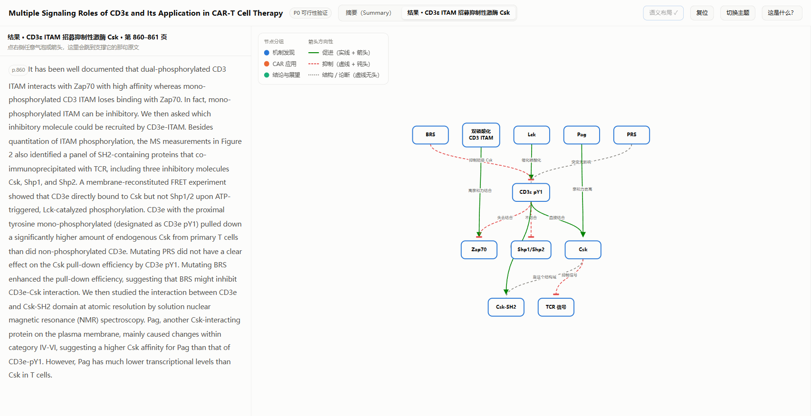
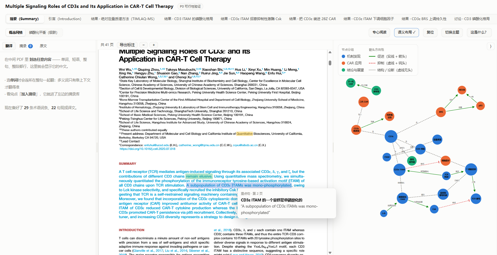
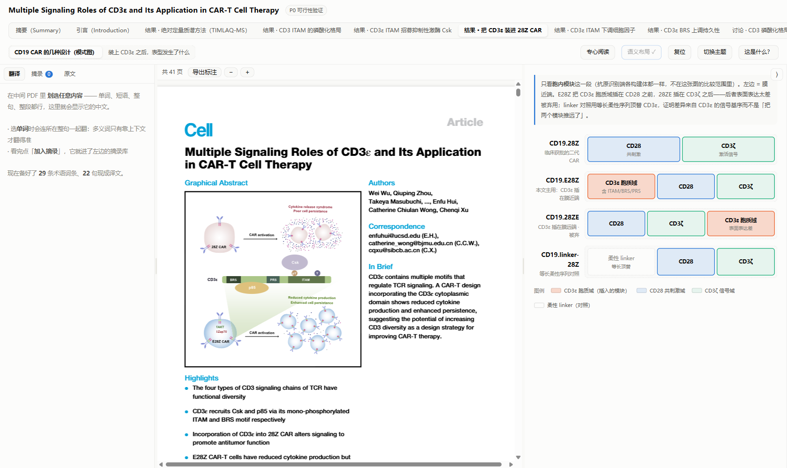

AnonSight
把「读一篇英文论文」从翻页 + 查词，变成有地图的阅读： 右手边永远是一张「你正在读的这一节讲了什么」的思想图，图上每个方框、每条箭头，都能点回原文那一句。
为什么不是「PDF 阅读器 + 翻译插件」
读文献真正的卡点不是不认得单词，而是读完一段之后说不清它在论证什么，以及这一节的结论和上一节的机制是什么关系。 翻译插件解决的是字面，AnonSight 想解决的是结构：把一篇论文拆成「节 → 导读 → 思想图 → 原文依据」四层， 每一层都能一路点回原句。它不是给你更多信息，是把论文压缩成可核对的地图。
「让老师对读文献的全部需求，尽量都在这一个平台内满足。」
三条定调（开发时就写死、后面不再改）：图由 AI 自动生成、人只改不画； 先做单篇，但概念 ID 必须全局（结构上能长成跨文献对比）； 先自己用，但要能开源。
三栏 + 一列详情，右栏跟着你读到的位置走
Ctrl+滚轮 缩放，页宽永远不超过这一栏。
另有两种整屏状态：专心阅读（收起右栏、PDF 自动铺满中间那栏）和适配窗口（窗口大小变过之后一键重排三栏并重新取景）。
下面是实拍（不是示意图）：





翻译：给的不是词典义项，是「这句话里它是什么意思」
选中一个词或短语，出来的是三样东西：整句译文 → 它在这个语境下的意思 → 容易理解错时的提醒。
译文里基因/蛋白/受体名保留英文（Csk、CD3ε、ITAM），是为了让你能对上原文；
而 signaling、chimeric antigen receptor 这类通用学术词必须翻成中文——保留反而读起来夹生。
真实案例（下面这张是现场调接口生成的，不是示意图）：
一部分 CD3ε ITAM 被单磷酸化，这归因于 Lck 激酶的选择性，并特异性地招募抑制性 Csk 激酶来减弱 TCR 信号传导。
选择性 —— 此处指 Lck 激酶对底物特定位点的偏好性，即只磷酸化 CD3ε ITAM 的单个酪氨酸而非两个。
⚠ 不是日常说的「选择性/挑选」，而是酶学中的底物位点选择性：Lck 只磷酸化 ITAM 中的一个酪氨酸（单磷酸化），而非两个都磷酸化。
一篇论文会把整句译文预先算好并缓存（几百到上千句），所以划词是秒回的； 每次一键分析时顺带预热，读到哪句都不卡。
选词的规矩：选中什么就翻译什么——平台不会自作主张往两边扩词。
唯一的例外是被换行拆开的词：hypophos- 换行接 phorylated，
那本来就是一个词，会自动接回来再翻（well-known 这种真连字符不受影响）。
概念链接：同一个概念，跨节串成一条线
论文里同一个东西会在十来个地方出现，但每次叫法、上下文都不同。平台给每个概念一个全局 ID（跨节复用，不是「本节第 3 号节点」）， 于是一张图上的一个气泡就能当索引用：点开它 → 这个概念在全文出现过的每一处、每一句原文依据，按节列出来；点任意一条，左栏跳到那句并高亮。
下面这张卡的真身来自库里 wu2020 那篇（ε-ITAM，全文最"枢纽"的一个概念）：
ε-ITAM
概念 IDcd3e.itam · 机制发现
CD3ε ITAM（T 细胞受体 CD3ε 链上的免疫受体酪氨酸激活基序）
→ 被 Lck 选择性单磷酸化 · → 招募抑制性激酶 Csk · ← 由 BRS 上调持久性
这条设计决定了一个上限也开了一个口子：概念 ID 是全局的，所以将来同一批概念可以在不同论文之间连起来（跨文献对比）， 现在还没做——但目前单篇内的「一个概念 → 全文所有出处」已经能用。
同样是读 PDF，多出来的是什么
| 这件事 | 普通 PDF 阅读器 / 翻译插件 | AnonSight |
|---|---|---|
| 翻译的粒度 | 词 → 词典义项罗列 | 整句译文 + 该词在本句的语境义 + 易错提醒，专业名词按论文自己的术语表统一 |
| 读完一节能带走什么 | 几处高亮 | 一张这一节的导读 + 一张思想图（概念网/流程图/模式图/对照表，按内容自动选型） |
| 能不能核对"AI 说的对不对" | — | 每个方框、每条箭头都挂着原文引文；引文必须能在本节原文里逐字找到，否则这一节打回重做 |
| 概念跨节关联 | 靠自己记 | 全局概念 ID：一个气泡点开 = 这个概念在全文的每一处出处 |
| 阅读位置与图 | — | PDF 滚到哪一节，右栏自动换成那一节的图（手点则暂停跟随，滚回去自动恢复） |
| 积累 | 高亮散在各处 | 划过的词句进表达库（搭配/动词/逻辑/句式/术语分型），可导出 JSON 带走 |
| 数据在哪 | 云端账号 | 全在本机，离线可用；原文、AI 生成的图与标注、以及你自己标的高亮都封在那一篇自己的 .ano 里（一个文件就能带走，换电脑重开还在） |
现在能做的事
入库与自动分析
- 两种导入：把 PDF 拖到页面上，或顶栏「＋ 导入 PDF」
- 自动分节：认出编号标题、一级/二级标题，剔掉正文碎片与图内文字
- 一键分析：逐节产出导读 + 思想图 → 校验 → 标注层 → 翻译预热 → 打包成
.ano，跑完自动刷新 - 论文库：改名、拖拽排序、删除、检索；当前在读的那篇挂「正在阅读」徽章
- 续读：下次打开直接回到你上次读的那篇
思想图（四种图型）
- 概念网：这节在铺哪些概念、谁和谁有关
- 流程图：有先后、有分支的过程（信号级联、实验步骤）
- 模式图：构建体/结构域怎么搭的
- 对照表：突变体 × 表型、方案对比
- 默认图智能化：一节有多张图时，按内容挑一张当默认（长节的第一张必须是覆盖全节的概览）
导读与关键概念
- 导读卡：一句话说清这节讲什么，外加「读的时候盯住哪一句」
- 关键概念气泡：这一节最该记住的几个概念，点开即概念卡
- 节点聚焦：点一个概念可以把它当中心重排，看它跟谁连着
标注层与表达库
- 两层分得开：AI 预标注是一层淡色，你自己标的是同色 + 底部实色下划线——在 PDF 里一眼看出是谁标的
- 自动高亮五色：搭配/动词/逻辑/句式/术语，悬停出中文释义
- 清除模式：进清除模式后点一下那个色块就清掉它；AI 预标注那层动不了；
Ctrl+Z可撤销 - 标注存两份：即时写浏览器（离线不丢）+ 写进论文自己的
notebook.json（换电脑重开还在、也还能清除） - 划词收进摘录，再一键整理成表达库格式（自动编号、自动判类型）；可导出 JSON 带走
阅读体验
- 滚动跟随：PDF 滚到哪，右栏切到哪一节
- 专心阅读：收起右栏，PDF 自动铺满，左边只留翻译/摘录
- PDF 缩放：
Ctrl+滚轮（触控板捏合同样可用）/Ctrl+0适应宽度；页宽任何时刻不超过中间那栏 - 页码与跳转：
第 [n] 页 / 共 N 页，可直接输入页码回车跳转（越界自动夹住、Esc 取消） - 键盘翻页：空格 / PgUp / PgDn / ↑↓ / Home / End
- 全文搜索：
Ctrl+F（或工具条「搜索」）→ 查某个词/基因名出现在哪些页， 计数是「第 3/17 个」，回车下一个、Shift+回车上一个（到底绕回开头），Esc 关。 命中画成琥珀金空心框，和四条标注层的实心色块一眼分得开 - 点引用和图号跳转：正文里的
[12]、Fig. 3点一下直接跳过去（目标页闪一下）； DOI 等外链在新标签页打开。拖一下是选词、点一下才跳，两者不打架 - 记住读到哪：重开这篇论文自动回到上次那一页
- 溯源跳转：点图上的元素 → 左栏跳原文并高亮那一句
它是怎么保证质量的
- 校验器是硬闸门：AI 写的每条引文必须能在本节原文里逐字找到，否则整节打回重做；宁可少画，不许编造
- 引文吸附：模型抄错（大写、希腊字母、弯引号）时把它"吸"回原文那一段，而不是放宽校验
- 独立验收：每轮验收由另一个 agent用真鼠标操作完成，报告编号累积、绝不覆盖（已到第 12 轮）
- 失败可复盘：被回绝的原稿全部留档，不靠猜
.ano：一个文件，装下一整篇论文
平台的存库格式叫 .ano —— 它不是压缩包、不是数据库，而是一份标准 PDF，加上几层随身的分析成果。
| 一个 .ano 里有什么 | 说明 |
|---|---|
| 原文 | 就是那一篇论文本身，页面一个字节没改 |
| 思想图与导读 | 「一键分析」产出的节划分、导读卡、四种图型 |
| 标注与译文 | AI 预标注、你自己标的高亮与生词、划词的翻译缓存 |
它本身就是一份标准 PDF
- 用别的 PDF 阅读器打开照样能看；你自己打的高亮也在——那是标准 PDF 注释，不是只有 AnonSight 认得的东西
双击就打开那一篇
- 双击
.ano直接用 AnonSight 打开它，不用先开平台、再进库里翻（安装时装好了文件关联）
拷一个文件就走
- 发给别人、拷到另一台电脑、丢进网盘，都是拷一个文件：图、标注、译文跟着走，不用带一个文件夹
分析跑完会自动产出 .ano；库里每一篇都是这么存的。
从「起脚本 + 开浏览器」变成真正的桌面软件
安装
- 到 Releases 下载
AnonSight-0.1.0-Setup-preview.exe， 一键装到任意位置，自动建开始菜单与桌面快捷方式，并装上.ano的文件关联 - 不装 Python、不用开浏览器：装完就是一个程序，双击即用，自带窗口
- 也可以直接跑源码：
pip install -r requirements.txt→python server.py
AI 是可选的
- 不接 AI 也能当
.ano阅读器用：能看章节切分、思想图、标注和已有的译文；只是不能重跑「一键分析」、也不能对刚划的词做实时翻译 - 一键分析要接一个模型：填「接口地址 + 模型名 + API Key」三样就能用， 任何 OpenAI 兼容的服务都行（DeepSeek / Kimi / 智谱 / OpenAI / 本地 Ollama…）， 不需要装 Claude Code 或任何别的东西
- 设置里有「常用服务」下拉：选中自动填好地址和模型名，贴个 Key、点「测试连接」当场验通
- 划词翻译走同一个接口，不需要另配
上手
- 顶栏「这是什么？」是面向大众的说明面板：怎么用 / 图是怎么来的 / 「关于
.ano文件」——第一次上手先点它
它在 GitHub 上，而且很需要别人来改
代码在 github.com/liebaojun/AnonSight， MIT 协议，随便用随便改。
一件必须先说清楚的事：它偏科
开发与测试过程中，绝大多数样本都是生物医学论文（CAR-T、信号通路方向）。
它的骨架——分节、溯源校验、图型渲染、.ano 格式——是通用的，
但提示词和「什么内容用什么图」的规则，是照着生物医学的行文习惯调出来的。
换到其他学科，效果大概率会打折。
所以最欢迎的一类贡献，就是让它在你自己的领域里能用：
改 prompts/ 里那三个 md（领域抽取规则 + 术语规范），提个 PR 就行。
AI 接口：通用的，接哪家都行
openai（默认）：打任意 OpenAI 兼容的/chat/completions—— 只要地址 + 模型名 + Key，界面上就能改，不用动代码claude-code（可选）：后台拉起本机的claude命令， 给已经装了 Claude Code、想用它的额度的人- 各家预设（DeepSeek / Kimi / 智谱 / OpenAI / Ollama）只是帮你把地址和模型名填好， 不是白名单——三个框都能自己改
欢迎加适配器 —— 但是「增加」不是「替换」
- 用 Codex / DSH / Cursor / 自建服务的人，非常欢迎来加一条路
core/adapters.py里的ADAPTERS本来就是注册表：加一个类 + 一行注册- 请保留现有的两条，做成并列关系——别把它们换掉，不然已经配好的人会突然用不了
插件化的口子留好了，但还没做机制
- 领域提示词：
prompts/*.md是纯文件，换个学科就是换几个文件 - AI 后端：
adapters.py是注册表 - 新图型（统计图、折线图、时序图……）：前端目前是写死的 if/else 分发， 这是最大的一块硬骨头，也是最有价值的贡献
- 正式的插件加载机制故意没做——先有真人写过插件，再谈怎么分发
其它欢迎的东西
- bug 报告（带复现步骤最好，这个平台是「真鼠标操作」测出来的）
- 扫描版 PDF 的适配、非 Windows 平台的支持
- 任何一篇「这个平台读起来不对劲」的论文样本——比什么都有用
能用，但别指望它是成品软件
已经过的关：独立验收已到第 12 轮；装好的那版实测走通一条"金标准"——双击 .ano 打开那一篇 →
一键分析四步全绿（9/9 节出图 · 284 条标注 · 167 句译文）→ 拖一篇没见过的论文进去 → 自动分节 →
每一节都有图有导读 → 标注层出彩色高亮 → 真鼠标悬停出释义卡 → 划普通单词出语境义 → 点图溯源跳回原文。
| 边界 | 现在是什么情况 |
|---|---|
| 超长的一节出图数量 | 模型单次回话有输出上限，最长的节稳定出到 5 张（1 张概览 + 每意思块 1 张）；要更多得改成多次调用 |
| 宽栏下的流程图 | 左右各还剩约 84px 空白；要彻底吃满得把流程图改成多列布局（未做） |
| 图特别密的页 | 个别页的自动标注会稀疏甚至为空（如某篇 eLife 的 p3/p7） |
| 扫描版 PDF | 需要文字层，纯扫描件没验证过 |
| 跨文献对比 | 概念 ID 已经是全局的、留了口子，但跨论文连图还没做 |
| 摘录的存放位置 | 摘录仍只存在浏览器本地（可导出 JSON 带走）；高亮标注已经双写进论文文件夹 |
| 专心阅读的退出 | 进「专心阅读」后，右栏那个 ⟩ 按钮会被压没、点不到 ——
请用顶栏的「退出专心」按钮回来（已记录待修） |
| 装的时候会被拦一下 | 安装包没有代码签名，别人第一次装会被 Windows SmartScreen 拦成「未知发布者」， 点「更多信息 → 仍要运行」即可 |
| 多个实例 | 平台已经开着时，再双击一个 .ano 会另开一个窗口，不会切到已经开着的那个 |
| 某些版式的分节偏粗 | 有小标题、但不是规范编号标题的版式（如 eLife 那类）切得偏粗； 分析完成后顶栏用的是 AI 认出的真标题，但节划分本身仍是短板 |
| 怎么跑起来 | 有安装程序，一键装（见第八节），装完不依赖 Python、不用开浏览器； 开发时也可以双击启动脚本跑源码版 |
| 界面语言 | 中文界面，面向中文读者的英文文献精读 |
值不值得用，看场景：如果一篇论文你要读一小时以上、读完还要写组会汇报或综述， 它省下的是"来回翻原文核对"的时间；如果你只想扫一眼摘要，用它反而更慢。